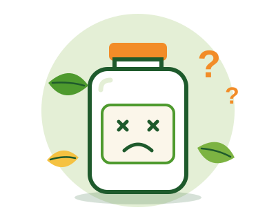

Página no encontrada
Este frasco está vacío: la página que buscas no existe o cambió de lugar. Regresa al inicio y sigue explorando nuestros productos naturales.

Este frasco está vacío: la página que buscas no existe o cambió de lugar. Regresa al inicio y sigue explorando nuestros productos naturales.